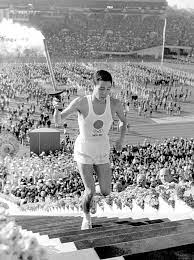

＜質問＞
・開港祭の日は横浜市内の学校は休みになるが、昔からその日は休みだったか。また休みだった場合、その日は何をしていたか。
・マリンタワーは2010年に恋人の聖地として認定されたが、設立された当初からデートスポットだったのか。
・1964年のオリンピックは競技場に見に行ったか。直接見に行く以外ではどうやって大会を見たのか。
・オリンピックは日本に大きな経済効果をもたらしたが、それにより生活の中でなにか変わったことはあったのか。
・オリンピックによるマイナスな影響もあったのか。
・横浜博覧会にあったテーマパークなどの様々な施設の中で最も面白かったものは何か。
・横浜博覧会が開催された時はどのような気持ちだったか。
・横浜にマリンタワーや横浜スタジアム、地下鉄など、次々にいろいろなものが作られていく中で、どのようなことを思ったか。
・動く歩道や横浜美術館など、横浜博覧会が行われたときに作られたものは今でも残っているが、昔と比べて、みなとみらいのここが変わったなというところはあるか。
・昔は横浜の中で遊びに行くとなったらどこに行っていたか。
＜資料写真＞

